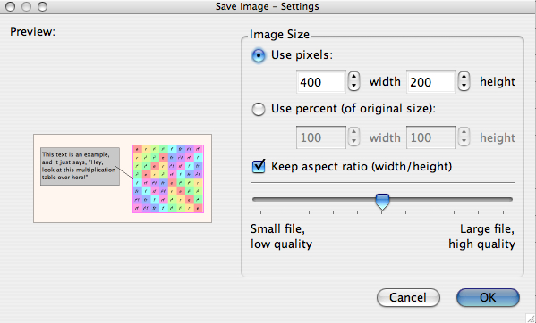
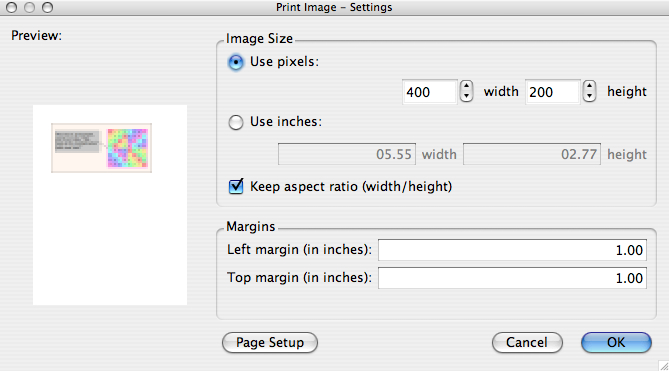

Each visualizer in Group Explorer can show up in three contexts: as an image in a help page or group info window, as an item in a sheet, or in full detail in its own editable window. This last case is the subject of this page.
Because each visualizer is different, this page just what all large visualizer views have in common, and refers you to each visualizer's individual interface page for specific information about each.
You get to a large view of each visualizer one of two ways.
Here is a screenshot of a window viewing a large version of a Cayley diagram.
Every large visualizer is split in two halves, like the one shown above. The left half will always have the picture--the visualization. The right half will be controls that allow you to edit the picture. The boundary between these two is movable; if you hover your mouse over it you will see your mouse cursor change to indicate that it can be slid left and right. You can also slide it all the way to the right edge of the window to (temporarily) hide the controls pane.
The lower right hand portion of every large visualizer window contains two buttons: Help and Reset. Help opens the help page for that specific visualizer (there are links to these below). Reset returns the visualizer to a plain vanilla state, with no editing having been done. Note that this does not wipe out all memory of edits you have done--if you did not mean to reset the visualizer, you can Undo the action with the Undo button on the toolbar (see below).
In this section you will find documentation on menu items and buttons present in every large visualizer. If you have questions about a menu item or button that is not listed here, then it is probably specific to the visualizer type you are viewing. Refer to the help page for that visualizer type by following one of these four links:
Here is a list of all the actions you can take from the menus in any large visualizer window. The buttons on the toolbars duplicate some of this functionality, which you can tell by the icons below.
A visualizer can be saved as a Portable Network Graphics (PNG) file. When you use this menu item (or toolbar button), a dialog much like the Print dialog (shown below) appears. It allows you to choose the size the image will be on disk (using absolute pixels or relative percentages) and the lossiness/compression used.

Group Explorer has a tutorial on saving and printing images.
Canceling will return you to Group Explorer without taking any action. Clicking OK will bring up a save dialog so that you can choose a filename to save under. If you do not add the extension .png yourself, it will be added for you.
Brings up a printing dialog that allows you to preview how the visualizer will look on the printed page.

Group Explorer has a tutorial on saving and printing images.
To choose a different page layout or orientation, click the "Page setup" button. To cancel printing, click the "Cancel" button. To resize the image on the page, use the boxes for choosing size, either in pixels or inches. Margins can also be edited directly (in inches only). When the settings are as you would like them, click the "OK" button, and the usual print dialog box for your platform will appear, so that you can select a printer, print quality, etc.
Most visualizers provide additional actions for the Edit menu, but the following three are always present.
Undoes the last change made to the visualizer. Note that hovering your mouse over this button will insert into the status bar (at the bottom of the visualizer window) a description of what you would undo if you clicked the button.
Redoes the last change undone to the visualizer. Note that hovering your mouse over this button will insert into the status bar (at the bottom of the visualizer window) a description of what you would redo if you clicked the button.
Copies an image (a pixmap) of the large visualizer you're currently seeing onto the system clipboard, so that you can paste it into another application (e.g. a word processor or presentation program).
Opens help at the table of contents for the User Manual.
Opens help at the table of contents for the Tutorials.
The "What's this?" button appears on the toolbar of the main window, and has its own separate help page here.
Some visualizers have controls specific to their own needs which no other visualizer uses. For help on such controls, see the four links provided above to the help pages for each specific large visualizer. But there are also two controls that show up in more than one type of visualizer, and thus they are worth mentioning here.
Any visualizer that allows you to highlight subsets of a group will grant you access to the subsets control. That control has its own help page, which you can read here.
Any visualizer that depicts three-dimensional objects will grant you access to controls for choosing line thickness, zooming, depth cueing (fog), and a few other options relevant to three-dimensional scenes. These options are grouped into one control, which has its own help page here.
Quick help links:
Contents | Getting Started | Tutorials | User Manual | Miscellaneous Reference
GE terminology | Help on help